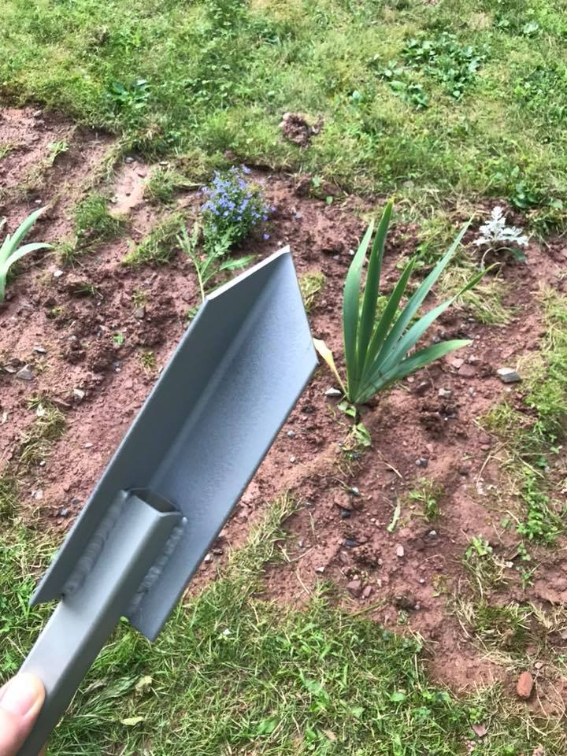

shovels revision 4735
^ Projects infobox ^^
| image | Spade.scad.png |
| designer | [[user:tim|Timothy Schmidt]] |
| date | 2020 |
| tools | [[wrenches|Wrenches]] |
| parts | [[frames|Frames]], [[bolts|Bolts]], [[nuts|Nuts]], [[end_caps|End caps]], [[plates|Plates]] |
| techniques | [[bolting|Bolting]] |
| git | |
| stl | |
Challenges
Enjoyment derived from digging in the dirt tends to be inversely proportional to the amount of dirt.
Approaches
Build a spade from Replimat components.
